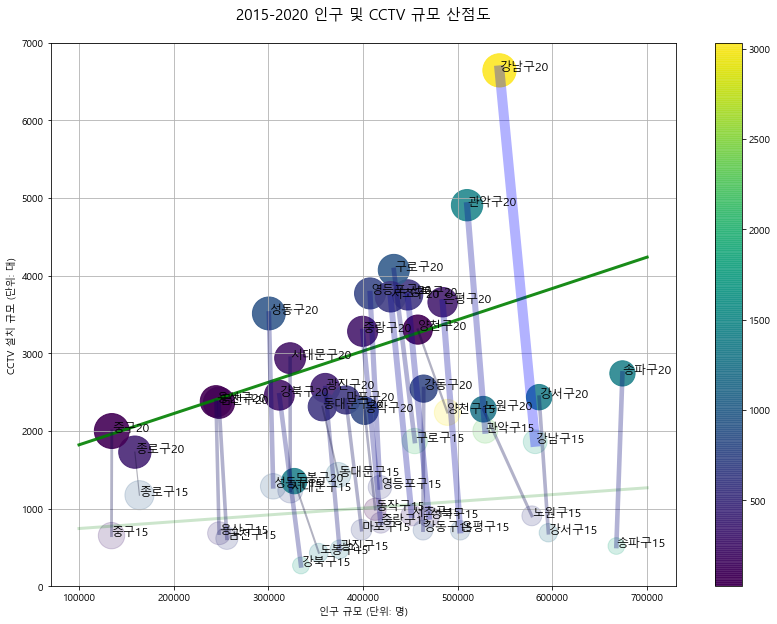

2021학년도 1학기 빅데이터분석 시각화 기말 과제¶
제목: 2015년 및 2020년 기준 서울시 인구-CCTV 현황 산점도
학번:
이름:
주의 사항
효율적이고 간결한 코드
아래에 작성할 코드에서 불필요한 코드는 원칙적으로 포함시키지 말아야 합니다.
주석에서 명시한 작업만 효율적으로 수행하도록 간결하게 코드를 작성하기 바랍니다.
불필요한 코드가 포함될 경우, 평가 과정에서 감점될 수 있습니다.주석을 충실하게 반영
아래에 포함된 주석은 절대로 수정하거나 삭제하지 마세요.
주석에서 명시한 작업은 반드시 해당 주석이 있는 곳에서 수행하기 바랍니다.
주석을 수정/삭제하거나 주석에서 명시한 작업이 누락될 경우, 평가 과정에서 감점될 수 있습니다.포함된 코드와 누락된 코드
아래에 포함된 코드는 절대로 수정하거나 삭제하지 마세요. 누락된 코드를 완성하여 작업을 수행하기 바랍니다.
배포된 코드를 수정/삭제할 경우, 평가 과정에서 감점될 수 있습니다.코드 셀 실행 결과 출력
본 노트북에 포함되어 있는 출력과 동일한 결과가 생성되도록 코드를 완성하기 바랍니다.
평가 과정에서, 제출한 노트북을 실행한 결과가 여기에 제시된 출력과 다르다면, 감점될 수 있습니다.
1. 라이브러리 임포트¶
# 라이브러리 임포트
import as pd # pandas를 pd로 준비
import as np # numbpy를 np로 준비
import as plt # pyplot을 plt로 준비
import # platform 준비
from import # 글꼴 처리 준비
# 주피터 노트북에서 시각화 결과가 직접 출력되도록 설정
inline
# 판다스 데이터프레임 실수 출력 형식 지정
pd.options.display.float_format = '{:,.1f}'.format
File "<ipython-input-1-840e5fb566bd>", line 2
import as pd # pandas를 pd로 준비
^
SyntaxError: invalid syntax
2. 시각화를 위한 글꼴 준비¶
# 운영체제에 적합한 한글 글꼴 지정
plt.rcParams[] = False # '-' 부호가 정상적으로 출력되도록 설정
if platform.system() == 'Darwin': # 운영체제가 MAC OS X라면
rc('font', family='AppleGothic') # 애플고딕 글꼴 지정
elif platform.system() == 'Windows': # 운영체제가 윈도우라면
path = "c:/Windows/Fonts/malgun.ttf" # 글꼴 파일 경로 지정
font_name = font_manager.FontProperties(fname=path).get_name() # 글꼴 이름 획득
rc('font', family=font_name) # 획득한 글꼴 이름으로 지정
else: # 기타 운영체제라면
print('Unknown system... sorry~~~~') # 글꼴 설정 실패 메시지 출력
3. 인구 데이터 준비¶
# 연도를 매개변수로 지정하여 인구 데이터를 입력하는 함수 정의
def ():
# 파일 읽기
pop = pd.read_csv(
'./pop_'++'.txt',
sep = , # 구분자를 탭으로 지정
thousands = , # 천 단위 구분 쉼표 처리
header = , # (0부터 시작하는 번호 기준으로) 2번 행을 헤더로 지정
usecols=, # 지정 열만 읽어들이도록
)
# 열 이름 변경
pop.(
={pop.columns[1] : '인구 규모 '+str(연도)},
inplace=
)
# 널 값을 포함한 행 조사
if pop.:
print(f'fillna() 호출 전, 널 값이 포함된 행: \n{pop[pop.isnull().any(axis=1)]}')
pop.(0, inplace=True)
print(f'fillna() 호출 후, 널 값이 포함된 행: \n{pop[pop.isnull().any(axis=1)]}')
# 합계 행 삭제
rows = pop[ ].index
pop.(rows, inplace=True)
# 데이터 프레임 반환
return
# 연도를 지정하여 인구 데이터를 입력하는 함수 실행
df_pop2015 = read_pop(2015) # 1) 2015 인구 획득
df_pop2020 = read_pop(2020) # 2) 2020 인구 획득
# 인구 데이터 병합
df_pop = pd.merge(
,
='outer',
on=
)
# 결과 출력
df_pop.head()
| 자치구 | 인구 규모 2015 | 인구 규모 2020 | |
|---|---|---|---|
| 0 | 종로구 | 163822 | 158996 |
| 1 | 중구 | 134329 | 134635 |
| 2 | 용산구 | 247909 | 244645 |
| 3 | 성동구 | 305065 | 300505 |
| 4 | 광진구 | 375180 | 360109 |
4. CCTV 데이터 준비¶
# CCTV 데이터 파일 읽어오기
df_cctv = pd.read_csv(
# 파일 경로 지정
# 천 단위 구분 쉼표 처리
# (0부터 시작하는 번호 기준으로) 1번 행을 헤더로 지정
# 인코딩 방식 지정
)
# 열 이름 변경
df_cctv.rename(
columns={
'구분': ,
'2011년 이전':
}, # '구분'을 '자치구'로, '2011년 이전'을 '2010년 이전'으로 변경
# 원본을 직접 수정
)
# 2015년 합계 계산
lst_col =
df_cctv['CCTV 규모 2015'] =
# 2020년 합계 계산
lst_col =
df_cctv['CCTV 규모 2020'] =
# 널 값을 포함한 행이 존재하면 널 값을 0으로 치환
if df_cctv.:
print(f'fillna() 호출 전, 널 값이 포함된 행: \n{df_cctv[ df_cctv.isnull().any(axis=1) ]}')
df_cctv.
print(f'fillna() 호출 후, 널 값이 포함된 행: \n{df_cctv[ df_cctv.isnull().any(axis=1) ]}')
# 2020년 규모와 총계가 맞는지 확인
df_cctv[ ]
| 자치구 | 총계 | 2010년 이전 | 2011년 | 2012년 | 2013년 | 2014년 | 2015년 | 2016년 | 2017년 | 2018년 | 2019년 | 2020년 | CCTV 규모 2015 | CCTV 규모 2020 | |
|---|---|---|---|---|---|---|---|---|---|---|---|---|---|---|---|
| 0 | 계 | 75431 | 5901 | 1619 | 2228 | 0 | 4368 | 6742 | 8300 | 10100 | 9687 | 11657 | 10232 | 20858 | 70834 |
# 합계 행 삭제
rows =
df_cctv.drop(rows, inplace=True) # 합계 행을 삭제
# 불필요한 열 삭제 ('자치구', 'CCTV 규모 2015', 'CCTV 규모 2020' 열만 남기고 다른 열은 제거)
cols =
df_cctv.
# '자치구' 열 내부의 공백 제거 (예를 들어 '중 구'를 '중구'로 수정)
# 결과 출력
df_cctv.head()
| 자치구 | CCTV 규모 2015 | CCTV 규모 2020 | |
|---|---|---|---|
| 1 | 종로구 | 1175 | 1729 |
| 2 | 중구 | 654 | 2001 |
| 3 | 용산구 | 685 | 2383 |
| 4 | 성동구 | 1289 | 3515 |
| 5 | 광진구 | 477 | 2556 |
5. 인구-CCTV 데이터 병합¶
# 인구와 CCTV 병합
cctv_with_pop = pd.( # 병합 함수 호출
# 병합 대상은 인구 및 CCTV
# 외부 조인 방식
# 조인 기준 열 지정
)
# 자치구를 인덱스로 설정
cctv_with_pop.
# 병합 결과 출력
cctv_with_pop.head()
| 인구 규모 2015 | 인구 규모 2020 | CCTV 규모 2015 | CCTV 규모 2020 | |
|---|---|---|---|---|
| 자치구 | ||||
| 종로구 | 163822 | 158996 | 1175 | 1729 |
| 중구 | 134329 | 134635 | 654 | 2001 |
| 용산구 | 247909 | 244645 | 685 | 2383 |
| 성동구 | 305065 | 300505 | 1289 | 3515 |
| 광진구 | 375180 | 360109 | 477 | 2556 |
6. CCTV 비율 계산¶
# 인구 백명당 CCTV 비율 계산
cctv_with_pop['CCTV 비율 2015'] =
cctv_with_pop['CCTV 비율 2020'] =
# 계산 결과 출력
cctv_with_pop.head()
| 인구 규모 2015 | 인구 규모 2020 | CCTV 규모 2015 | CCTV 규모 2020 | CCTV 비율 2015 | CCTV 비율 2020 | |
|---|---|---|---|---|---|---|
| 자치구 | ||||||
| 종로구 | 163822 | 158996 | 1175 | 1729 | 0.7 | 1.1 |
| 중구 | 134329 | 134635 | 654 | 2001 | 0.5 | 1.5 |
| 용산구 | 247909 | 244645 | 685 | 2383 | 0.3 | 1.0 |
| 성동구 | 305065 | 300505 | 1289 | 3515 | 0.4 | 1.2 |
| 광진구 | 375180 | 360109 | 477 | 2556 | 0.1 | 0.7 |
7. 회귀 분석¶
# 회귀선 준비
pf2015 = ( # numpy.polyfit(x, y, 차수)
# 추정에 사용할 x 좌표 값
# 추정에 사용할 y 좌표 값
# 1차원(직선 형태) 다항식
)
pf2020 = ( # numpy.polyfit(x, y, 차수)
# 추정에 사용할 x 좌표 값
# 추정에 사용할 y 좌표 값
# 1차원(직선 형태) 다항식
)
# y 축
fy2015 = # 2015년 회귀선 y 값 리스트 계산
fy2020 = # 2020년 회귀선 y 값 리스트 계산
# x 축
fx2015 = # 2015년 회귀선 x 값 리스트 계산
fx2020 = # 2020년 회귀선 x 값 리스트 계산
# 오차
cctv_with_pop['오차 2015'] = ( # 2015년 오차 계산
cctv_with_pop['CCTV 규모 2015'] - fy2015(cctv_with_pop['인구 규모 2015'])
)
cctv_with_pop['오차 2020'] = ( # 2020년 오차 계산
cctv_with_pop['CCTV 규모 2020'] - fy2020(cctv_with_pop['인구 규모 2020'])
)
# 결과 출력
cctv_with_pop.head()
| 인구 규모 2015 | 인구 규모 2020 | CCTV 규모 2015 | CCTV 규모 2020 | CCTV 비율 2015 | CCTV 비율 2020 | 오차 2015 | 오차 2020 | |
|---|---|---|---|---|---|---|---|---|
| 자치구 | ||||||||
| 종로구 | 163822 | 158996 | 1175 | 1729 | 0.7 | 1.1 | 373.7 | 331.7 |
| 중구 | 134329 | 134635 | 654 | 2001 | 0.5 | 1.5 | 121.5 | 38.5 |
| 용산구 | 247909 | 244645 | 685 | 2383 | 0.3 | 1.0 | 189.8 | 22.7 |
| 성동구 | 305065 | 300505 | 1289 | 3515 | 0.4 | 1.2 | 364.2 | 884.3 |
| 광진구 | 375180 | 360109 | 477 | 2556 | 0.1 | 0.7 | 509.1 | 314.9 |
8. 이동 거리 계산¶
# 자치구마다 이동 거리 계산
cctv_with_pop['이동 거리'] = (
( 1.0 * ())**2 # 1배로 스케일링
+ (100.0 * ())**2 # 100배로 스케일링
)
# 최대 이동 거리 확인
max_distance = cctv_with_pop['이동 거리'].
# 결과 출력
cctv_with_pop.head()
| 인구 규모 2015 | 인구 규모 2020 | CCTV 규모 2015 | CCTV 규모 2020 | CCTV 비율 2015 | CCTV 비율 2020 | 오차 2015 | 오차 2020 | 이동 거리 | |
|---|---|---|---|---|---|---|---|---|---|
| 자치구 | |||||||||
| 종로구 | 163822 | 158996 | 1175 | 1729 | 0.7 | 1.1 | 373.7 | 331.7 | 55,609.8 |
| 중구 | 134329 | 134635 | 654 | 2001 | 0.5 | 1.5 | 121.5 | 38.5 | 134,700.3 |
| 용산구 | 247909 | 244645 | 685 | 2383 | 0.3 | 1.0 | 189.8 | 22.7 | 169,831.4 |
| 성동구 | 305065 | 300505 | 1289 | 3515 | 0.4 | 1.2 | 364.2 | 884.3 | 222,646.7 |
| 광진구 | 375180 | 360109 | 477 | 2556 | 0.1 | 0.7 | 509.1 | 314.9 | 208,445.5 |
9. 산점도 시각화¶
# 산점도 준비 및 y축 범위 설정
# 그림 크기 (14, 10)으로 설정
# y 축 범위 (0, 7000)으로 설정
# 산점도 시각화 함수 정의
def (연도, 알파, fx, fy):
# 1) 산점도 그리기
( # 산점도 출력 함수
, # x
, # y
c=, # 마커 색상 (오차 데이터를 마커 색상으로 지정)
s=*1000, # 마커 크기 (해당 연도 CCTV 비율의 제곱근에 비례)
alpha= # 투명도
)
# 2) 추세선 그리기
(, , ls=, lw=, color=, alpha=) # 추세선 출력 함수(실선, 두께 3, 색상 초록, 투명도 알파)
# 3) 마커 레이블 출력
for n in : # df 행 개수만큼 반복
( # 자치구 레이블 출력 함수
, # 텍스트 위치 x (자치구 원 중심의 x 좌표 값)
, # 텍스트 위치 y (자치구 원 중심의 y 좌표 값)
, # 텍스트 내용 (예: '강남구20' 또는 '강남구15')
fontsize=12 # 폰트 크기
)
# 산점도 시각화 함수 실행
myScatter('15', 0.2, , ) # 2015년 산점도 시각화 함수 실행, 투명도는 0.2로 지정
myScatter('20', 0.9, , ) # 2020년 산점도 시각화 함수 실행, 투명도는 0.9로 지정
# 자치구 이동 궤적 출력
# df 행 개수만큼 반복
distance = # n번 자치구 이동 거리
x_values = [ # n번 자치구의 x 좌표 리스트 시작
, # 2015년 x 좌표
# 2020년 x 좌표
] # n번 자치구의 x 좌표 리스트 종료
y_values = [ # n번 자치구의 y 좌표 리스트 시작
, # 2015년 y 좌표
# 2020년 y 좌표
] # n번 자치구의 y 좌표 리스트 종료
( # 2015년 위치에서 2020년 위치로 이동 궤적 출력 함수
, # n번 자치구의 x 좌표 리스트
, # n번 자치구의 y 좌표 리스트
lw=*10, # 이동 궤적 두께를 최대 이동거리 대비 해당 자치구 이동거리 비율의 10배로 지정
color= # 이동 궤적 색상의 blue 값을 최대 이동거리 대비 해당 자치구 이동거리 비율로, 투명도를 0.3으로 지정
)
# 마무리
# 색상 조견 막대 출력 함수 (수직 방향)
# 산점도 제목 지정
# x축 제목 지정
# y축 제목 지정
# 눈금 그리드 보이도록 지정
# 시각화 결과 출력
